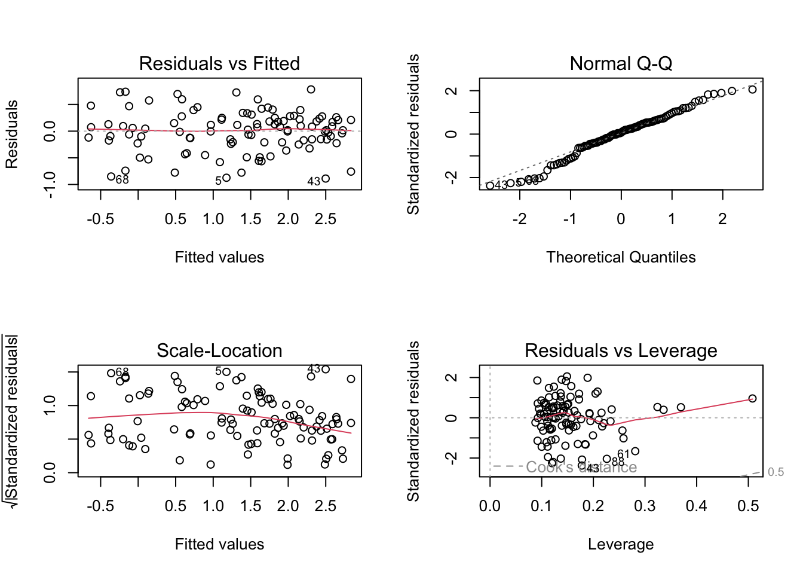

#visualize missing observations
gg_miss_var(plant_clean) +
labs(title = "Missing Values in the Dataset") +
theme_bw() +
theme(plot.caption = element_text(hjust = 0),
plot.caption.position = "plot")
Sarracenia is a genus of carnivorous plants typically found on the eastern seaboard of the United States. Within our data there are ten different species.
“Two plants of each Sarracenia species were assigned to one of six feeding levels in a regression design ranging from 0 - 0.25g of finely ground wasps per feeding (for small species), 0 - 0.5g (for species of intermediate sizes), and 0 - 1.0g (for large species); N equals120 plants total. Aboveground size and Amass were measured prior to commencing treatments. Plants were fed once/week for 7 weeks.” (Ellison).
The data is organized into columns that are characteristics, with each row being a an individual plant with its corresponding observations. There are 120 records and 32 variables in CSV format. 11 of the columns were calculated, while the other 21 were measurements.
#visualize missing observations
gg_miss_var(plant_clean) +
labs(title = "Missing Values in the Dataset") +
theme_bw() +
theme(plot.caption = element_text(hjust = 0),
plot.caption.position = "plot")
If chlorophyll content is missing, the amass column likely cannot be calculated. This could be the reason that each of those columns have the same number of missing N/A. Although it could also be that those specific plants did not meet the requirements to take the measurement in other categories as well within the full data set.
#drop NAs
plant_sub <- plant_clean |>
drop_na(sla, chlorophyll, num_phylls, amass, num_lvs)#calculate phearsons
plant_corr <- plant_sub |>
select(3:8) |>
cor(method = "pearson")
#visualize pearsons correlation
corrplot(plant_corr, method = "ellipse", addCoef.col = "black")
In this situation, I believe that it is safe to assume there is no colinearity between the variables. Although I will continue to monitor how the higher correlated variables affect different models as I run the regressions.
#create visualization of relationships
plant_sub |>
select(2:8) |>
ggpairs()
Based on the results from figure 3, there do not appear to be any strong relationships between the possible predictor variables. There would be a clear positive or negative trend with points forming a line if there was strong correlation.
#create null model
null <- lm(totmass ~ 1, data = plant_sub)
#create full model
full <- lm(totmass ~ species + feedlevel + sla + chlorophyll +
amass + num_lvs + num_phylls, data = plant_sub)The null model in this and all cases is the response variable against a one slope line. For our full model we will be looking at all the possible predictor variables combined into one model. This may seem like the best model now; however, it is also the most complex.
#full model diagnostics
par(mfrow = c(2,2))
plot(full)
#check normality
check_normality(full)Warning: Non-normality of residuals detected (p < .001).#check variability
check_heteroscedasticity(full)Warning: Heteroscedasticity (non-constant error variance) detected (p < .001).Created standard plots for checking assumptions as well as using Shapiro-Wilks and Breusch-Pagen tests. After visually and statistically checking the assumptions, the full model did not meet all assumptions.
#perform log transformation
null_log <- lm(log(totmass) ~ 1, data = plant_sub)
full_log <- lm(log(totmass) ~ species + feedlevel + sla + chlorophyll +
amass + num_lvs + num_phylls, data = plant_sub)
#check assumptions of transformed full model
par(mfrow = c(2,2))
plot(full_log)
check_normality(full_log)OK: residuals appear as normally distributed (p = 0.107).check_heteroscedasticity(full_log)OK: Error variance appears to be homoscedastic (p = 0.071).After performing the log transformation, I generated the standard plots to visually check assumptions for the new transformed model. Then I ran the same statistical tests used on the transformed model, which this new version passed.
#run VIF
car::vif(full_log) GVIF Df GVIF^(1/(2*Df))
species 42.351675 9 1.231351
feedlevel 1.621993 1 1.273575
sla 1.999989 1 1.414210
chlorophyll 1.949828 1 1.396362
amass 2.872084 1 1.694722
num_lvs 2.813855 1 1.677455
num_phylls 2.995510 1 1.730754Using generalized variance inflation factor, I determined that none of the variables displayed concern for collinearity.
#creating model 2
model2_log <- lm(log(totmass) ~ species + sla, data = plant_sub)
#check assumptions for model 2
par(mfrow = c(2,2))
plot(model2_log)
check_normality(model2_log)OK: residuals appear as normally distributed (p = 0.128).check_heteroscedasticity(model2_log)OK: Error variance appears to be homoscedastic (p = 0.074).For the second model I chose to look at species and specific area of the youngest leaf of the plant. All assumptions were passed.
#creating model 3
model3_log <- lm(log(totmass) ~ num_lvs + feedlevel + amass, data = plant_sub)
#check assumptions for model 3
par(mfrow = c(2,2))
plot(model3_log)
check_normality(model3_log)OK: residuals appear as normally distributed (p = 0.060).check_heteroscedasticity(model3_log)OK: Error variance appears to be homoscedastic (p = 0.125).For the third model I decided to look at the grams of ground hymenoptera given to each plant, the number of phyllodes/pitchers produced by each plant, and the mass-based light-saturated photosynthetic rate of youngest leaf. All assumptions were passed.
#creating model 4
model4_log <- lm(log(totmass) ~ species + feedlevel, data = plant_sub)
#check assumptions for model 4
par(mfrow = c(2,2))
plot(model4_log)
check_normality(model4_log)OK: residuals appear as normally distributed (p = 0.339).check_heteroscedasticity(model4_log)OK: Error variance appears to be homoscedastic (p = 0.110).For the fourth and final model, I looked at just species and the grams of ground hymenoptera given to each plant. All assumptions were passed.